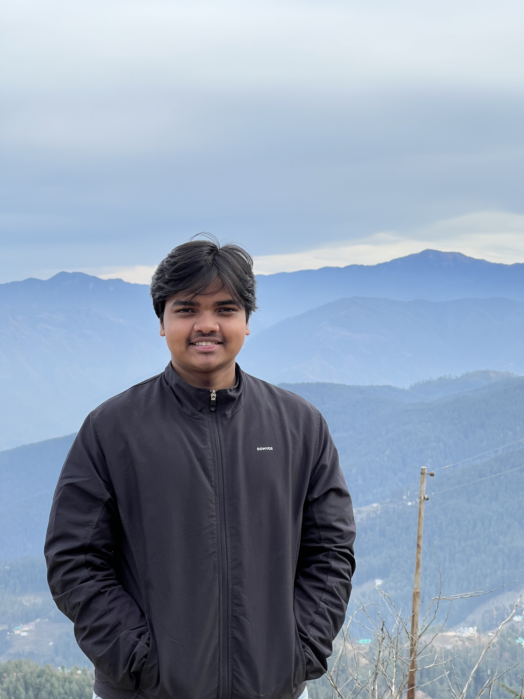

Saarthak Sinngh

Summary
I am a passionate web developer with experience in creating responsive and user-friendly websites.
I have a strong foundation in HTML, CSS, and JavaScript, and I am always eager to learn new technologies and improve my skills.
Education
- Class 10th (2022) from Radiant International School Patna
- Class 12th (2024) from Radiant International School Patna
- Bachelor of Computer Applications from KCC Institute of legal and higher education
Work experience
- Student Social Media Member of Radiant International School Patna
- Video editor at HHFC trust Patna
- Assistant video editor at Coding Panda
- Quality assurance intern at Coding Panda
Skills